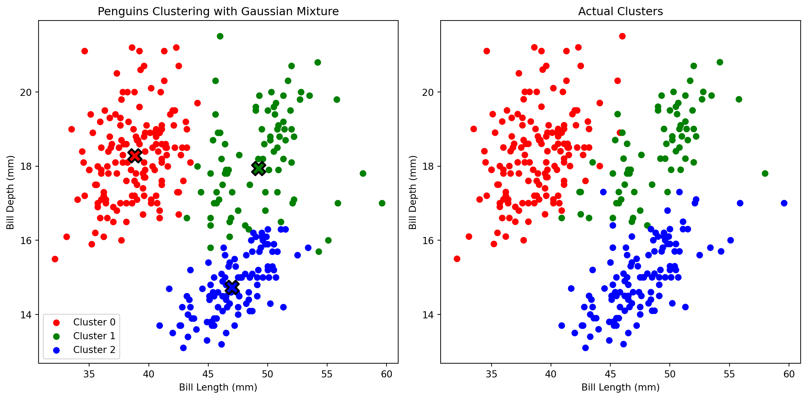
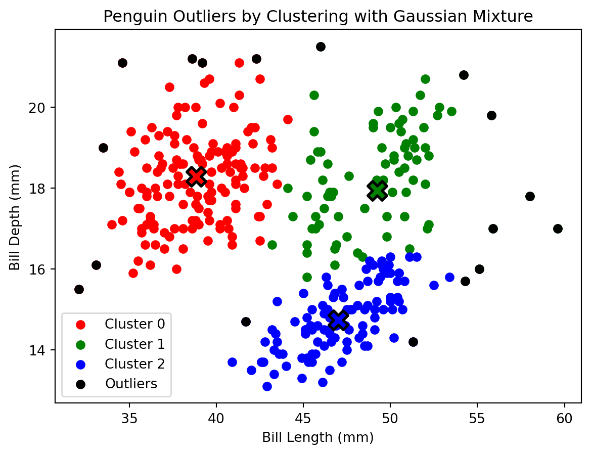
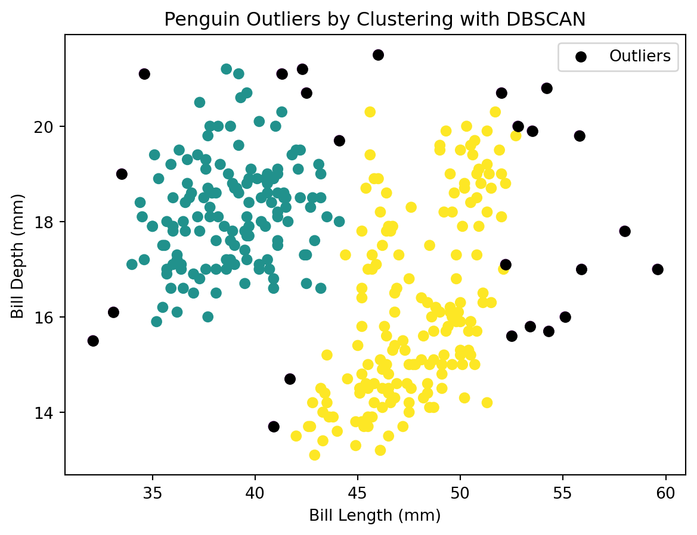

Imports
import numpy as np
import pandas as pd
import matplotlib.pyplot as plt
import warnings
# Suppress all warnings
warnings.simplefilter("ignore")Mark Hamilton
December 4, 2023
Previously, we used the penguins dataset from Seaborn to explore clustering. Let’s use the penguins dataset again to explore ways to find outliers in a dataset. The penguins dataset contains information about 3 different penguin species.
We removed the rows with null values from the dataset. We will only focus on bill size by using the measurements for bill length and bill depth.
Let’s use Gaussian mixture to find outliers. Gaussian mixture is a clustering method similar to k-means. While k-means is good at identifying circular clusters, Gaussian mixture can identify a more complex shapes, including ellipses. Gaussian mixture also provides a probability for how likely each point belongs to each cluster.
from sklearn.mixture import GaussianMixture
gm = GaussianMixture(n_components=3, random_state=42)
gm.fit(X)
gm_pred = gm.predict(X)
print(np.unique(gm_pred))[0 1 2]We fit the Gaussian mixture model to the data for bill size, and predicted the clusters. We know that there are 3 different penguin species, so we set n_components to 3. This made the model assign points to either cluster 0, 1, or 2. Let’s plot the clusters to see how Gaussian mixture performed.
fig, axes = plt.subplots(1, 2, figsize=(12, 6))
colors = ['red', 'green', 'blue']
# Scatter plot for each cluster
for cluster_num in range(gm.n_components):
cluster_data = penguins[gm_pred == cluster_num]
axes[0].scatter(cluster_data["bill_length_mm"], cluster_data["bill_depth_mm"], color=colors[cluster_num], label=f"Cluster {cluster_num}")
# Plotting cluster centers
for i, mean in enumerate(gm.means_):
axes[0].scatter(mean[0], mean[1], marker='X', color=colors[i], s=200, edgecolors='black', linewidth=2)
axes[0].set_title("Penguins Clustering with Gaussian Mixture")
axes[0].set_xlabel("Bill Length (mm)")
axes[0].set_ylabel("Bill Depth (mm)")
axes[0].legend()
# Plotting actual clusters
species_colors = {'Adelie': 'red', 'Chinstrap': 'green', 'Gentoo': 'blue'}
axes[1].scatter(penguins['bill_length_mm'], penguins['bill_depth_mm'], c=penguins['species'].map(species_colors))
axes[1].set_title("Actual Clusters")
axes[1].set_xlabel("Bill Length (mm)")
axes[1].set_ylabel("Bill Depth (mm)")
plt.tight_layout()
plt.show()
It looks like Gaussian mixture did a better job than k-means for this dataset. Gaussian mixture also provides probabilities, so let’s take a look at them.
Length: 333[[1.0, 0.0, 0.0],
[0.99, 0.01, 0.0],
[0.99, 0.01, 0.0],
[1.0, 0.0, 0.0],
[1.0, 0.0, 0.0],
[1.0, 0.0, 0.0],
[1.0, 0.0, 0.0],
[0.96, 0.04, 0.0],
[1.0, 0.0, 0.0],
[1.0, 0.0, 0.0]]For each data point, there are three probabilities, each one corresponding to a cluster. So the first data point has a probability of 100% that it is in cluster 0, and 0% probability that it is in clusters 1 or 2.
Gaussian mixture also gives us the log-likelihood for each data point. This value is proportional to the model’s probability density function (PDF) at that point. A higher value means the data point is fits better with the model.
Length: 333[-3.8184661291427817,
-4.139050244213168,
-3.9896460411103667,
-4.7302522140905205,
-5.692483578519657,
-3.84834834433641,
-4.375535348056427,
-4.457162883602522,
-7.041180611735683,
-9.36886035974433]Let’s find outliers by finding the 5% of points from this dataset that fit this model the least. We will do this by finding the points with densities less than the 5th percentile.
There are 17 outliers, which is \(333 * 0.05\).
Let’s plot the Gaussian mixture clusters again, but this time we will also mark the outliers.
# Scatter plot for each cluster
colors = ['red', 'green', 'blue']
for cluster_num in range(gm.n_components):
cluster_data = penguins[gm_pred == cluster_num]
plt.scatter(cluster_data["bill_length_mm"], cluster_data["bill_depth_mm"], color=colors[cluster_num], label=f"Cluster {cluster_num}")
# Scatter plot for outliers
plt.scatter(outliers["bill_length_mm"], outliers["bill_depth_mm"], color='black', label='Outliers')
# Plotting cluster centers
for i, mean in enumerate(gm.means_):
plt.scatter(mean[0], mean[1], marker='X', color=colors[i], s=200, edgecolors='black', linewidth=2)
plt.title("Penguin Outliers by Clustering with Gaussian Mixture")
plt.xlabel("Bill Length (mm)")
plt.ylabel("Bill Depth (mm)")
plt.legend()
plt.show()
We can see that the outliers are in locations with lower density, and seem to be the least likely to fit in a cluster.
Let’s now use DBSCAN to find outliers. DBSCAN is another clustering method. DBSCAN does not take an expected number of clusters as an input. Instead, it finds clusters based on density. If there are enough points that are close enough together, DBSCAN will create a cluster. Not all points are necessarily assigned to a cluster. If a point is too far from any point that is in a cluster, the point will be marked as an outlier.
DBSCAN has two main inputs. eps is the maximum distance a point can be from a point in a cluster to be considered in the same cluster. min_samples is the minimum number of points that can be in a cluster.
DBSCAN assigns a predicted label to each data point. Each label represents the cluster the point belongs to. If the label is \(-1\), the model predicted that that point is an outlier.
This means that DBSCAN found two clusters (clusters 0 and 1), and some outliers. Let’s plot the clusters and the outliers.
# Scatter plot for normal points
plt.scatter(X["bill_length_mm"], X["bill_depth_mm"], c=dbscan.labels_)
# Scatter plot for outliers
plt.scatter(outliers["bill_length_mm"], outliers["bill_depth_mm"], color='black', label='Outliers')
plt.title("Penguin Outliers by Clustering with DBSCAN")
plt.xlabel("Bill Length (mm)")
plt.ylabel("Bill Depth (mm)")
plt.legend()
plt.show()
Again, the outliers are at the edges of the clusters. There are a few differences between the outliers determined by the two models, but they look very similar for the most part.